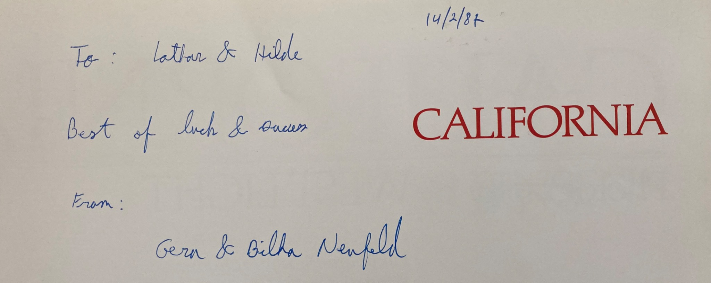
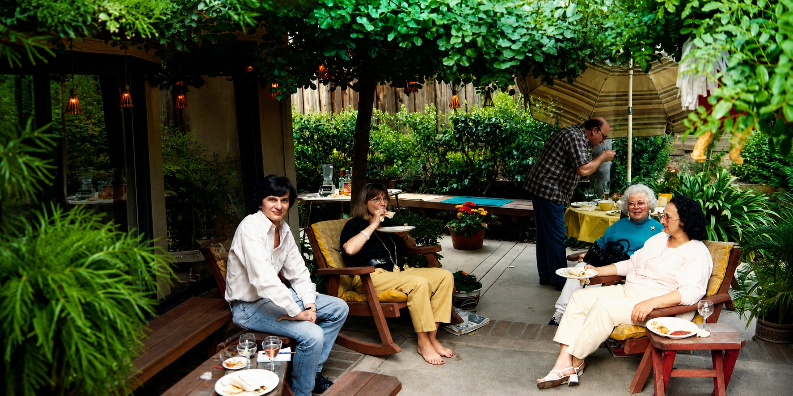

Als unsere Zeit in San Francisco zu Ende ging, waren auch meine Arbeiten im Labor mehr oder weniger abgeschlossen. Der Anfang war schwierig gewesen und von einigen Fehlschlägen begleitet. Mit der Zeit hatte sich aber doch der wissenschaftliche Erfolg eingestellt. Wir hatten genügend Geld zum Leben und konnten uns mit dem Stipendium und meiner Bezahlung durch Denis Gospodarowicz einen recht ordentlichen Lebensstandard leisten. Wir waren gereist, hatten Kalifornien kennengelernt und konnten das Leben dort zuletzt sehr viel mehr genießen als in den ersten Monaten. Im Rückblick war es eine runde Geschichte geworden.
Wir hatten Kalifornien lieb gewonnen. Das Kalifornien der frühen achtziger Jahre war allerdings ein anderes als das, das man heute erlebt. Jedenfalls ist das mein Eindruck. Die Menschen waren offen, freundlich und hilfsbereit. Natürlich ging es auch damals um Geld und beruflichen Erfolg, aber noch nicht in dem Ausmaß, in dem heute Profit, Besitz und äußere Wirkung das Leben zu bestimmen scheinen. Es gab eine Neugier und einen Erfindergeist, die uns beeindruckten. Man dachte groß, ohne sich dafür entschuldigen zu müssen. Das Land war weit, und ähnlich großzügig erschien uns auch die Mentalität seiner Bewohner.
Vieles davon wurde uns erst bewusst, als wir wieder in Deutschland waren. Dort vermissten wir plötzlich Dinge, die wir in Amerika kaum wahrgenommen hatten. Selbst das Sprechtempo kam mir anders vor. Nach unserer Rückkehr hatte ich anfangs den Eindruck, die Menschen in Deutschland redeten in Zeitlupe. Vor allem aber erschien mir vieles eng, kleinkariert und von einer Vorsicht geprägt, die ich in Kalifornien so nicht erlebt hatte. Später, besonders während meiner Heidelberger Zeit, sollte ich dafür noch genügend Beispiele finden.
Bevor wir Kalifornien verließen, wollten wir uns von den Menschen verabschieden, die in diesem Jahr zu unserem Leben gehört hatten. Es waren inzwischen doch einige zusammengekommen. Hilde hatte in der Abendschule ein schwedisches Paar kennengelernt, das uns auf die Idee mit der Weltreise gebracht hatte. Die beiden waren inzwischen selbst abgereist. Dafür kamen Joann, unsere Vermieterin, Jane aus unserem Haus, Ullis Verwandte und weitere Freunde, mit denen wir unsere Zeit in Kalifornien verbracht hatten.
Auch Gera und Napoleone aus dem Labor waren dabei. Darüber freute ich mich besonders. Gera schenkte mir einen kleinen Bildband über San Francisco und schrieb eine persönliche Widmung hinein. Das war keineswegs selbstverständlich, denn anfangs waren wir uns nicht besonders grün gewesen. Genauer gesagt hatte vor allem er Abstand gehalten, was sich aus seiner eigenen Geschichte und der seiner Familie erklärte. Im Laufe der Zeit war daraus offenbar doch mehr Nähe entstanden, als ich zunächst angenommen hatte.

Napoleone kam ebenfalls. Damals war er wissenschaftlich noch eine eher kleine Nummer, später wurde er mit seinen Entdeckungen zu einem Kandidaten für den Nobelpreis. Er war ein angenehmer und völlig unprätentiöser Mensch. Nach unserer Abreise übernahm er mit seiner damaligen Frau unser Haus im Sunset District. So blieb wenigstens dieses Haus, in dem wir ein Jahr lang gelebt hatten, gewissermaßen in der Familie des Labors.

Die Abschiedsfeier fand bei Ulli auf der Terrasse in San José statt. Es wurde gegessen, getrunken und gefeiert, wie man das bei solchen Gelegenheiten eben macht. Die Stimmung war zwiespältig. Einerseits ließen wir eine wunderbare Zeit und inzwischen viele Freunde zurück. Andererseits lag eine Weltreise vor uns. Wir hatten keine genaue Vorstellung davon, was uns erwartete, aber wir freuten uns darauf.
So verließen wir Kalifornien mit Bedauern und Neugier zugleich. Nach dem schwierigen Anfang war San Francisco für uns zu einer zweiten Heimat geworden. Nun packten wir unsere Rucksäcke und machten uns auf den Weg nach Tahiti.